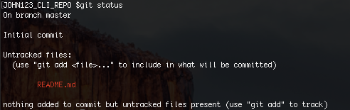
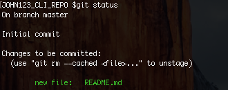
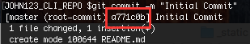
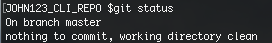
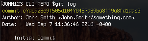
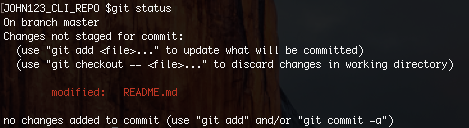
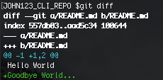
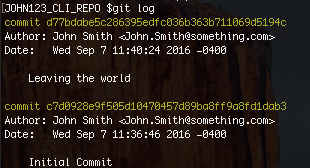

The Command Line Interface (CLI)
Behind every action in the friendly Github GUI is a series of commands that are run on the command line (or terminal). Although there is a learning curve for learning these commands, it is very important for the following reasons:
- If you plan to host a project on a server, there won’t be a nice GUI to interface with on the server.
- It is much faster to use version control on the command line than via the application. Depending on the size of your repository, it may take a while to get your files online (try pushing 500MB to a repo!)
- There are commands that haven’t been included in the GUI interface. For example, it’s not easy in the GUI to return a file to “5 versions ago”, while in the command line, you would use a single command.
Conceptually, it is the same as what you had been doing before on the
GUI, except your fingers will get a workout. If you are uncomfortable
with the Unix interface, there are lots of free resources online such as:
https://www.codecademy.com/learn/learn-the-command-line
http://openclassroom.stanford.edu/MainFolder/CoursePage.php?course=PracticalUnix
Try it out
So let’s try this on the command line now. Open up Git Bash if you want to follow along using your local machine (or, if you’re working locally on a Mac, open the Terminal). The first time we use Git on a new machine, we need to configure a few things. Here’s how to set up:
git config --global user.name "Firstname Lastname"
git config --global user.email "your@email.com"
git config --global color.ui "auto"
In this case, we’re telling Git our name and email address, to colorize output, and to use these settings globally with the –global flag.
Now that Git is configured, let’s create a repository following the instructions below:
# make an empty folder named <username>_CLI_REPO
mkdir <username>_CLI_REPO
# go into the folder
cd <username>_CLI_REPO
# initialize the repository to enable git
git init
# Make a file named README and fill it with the phrase "Hello World"
echo "Hello World" > README.md
If you type ‘ls -a’ in the directory now, you will find a ‘.git’ folder. What “git init” does is create a hidden directory where git stores information about the repo’s history.
Now that we’ve been set up let’s do a quick walkthrough of version control again:
1. Working Directory:
This is the repository or folder that you are currently making your changes in. However, you need to directly tell git that you want to track certain files - otherwise, git won’t take snapshots of those changes.
2. Staging Area:
The staging area contains all the tracked(added) files and information about what will go into your next commit. Think of this as the purgatory between snapshots. When you finally “Commit”, it saves the snapshot and your staging area will be clear.
3. Github Repository:
You send and receive snapshots to and from the Github Server through pushing (to send your changes) and pulling (to pull changes from collaborators).
You easily check the state of each file in your repo, whether it’s in the staging area or if it’s not committed yet by typing
It should return the following screen

This screen tells us that our file “README.md” is currently not tracked by github, so changes to it won’t be recorded. Let’s track it:
# Track the README.md file
git add README.md
# Now let's check our repository's status
git status

The README.md filename is now in green! That means that it is in the staging area, and that the changes to it are tracked. Git now knows that it’s supposed to keep track of README.md, but it hasn’t yet recorded any changes as a commit. The only step left is to take a snapshot.
# Commit your changes. Following -m is the name of the commit.
git commit -m "Initial Commit"
When we run git commit, Git takes everything we have told it to save by using git add and stores a copy permanently inside the special .git directory. Whenever you want to reference this special copy, you just need to use the hash name for the commit seen in the output.

Now run git status one more time

It tells us that our working directory is cleared - there are no new changes that git has noticed. Since I mentioned the hash name for the commit before, how would we pull up our history of commits and their hash names? You can do this by using the git log command.

This allows you to see your history of commits (we only have one so far), the author, and time of each commit. Notice that the first 7 characters of the commit name were the hash name. “git log” lists all revisions made to a repository in reverse chronological order.
Changing a File
Now suppose you add more information to the file... Let’s see how git handles it. Run the following command to add a new line:
# Add the line "Goodbye World" to README.md
echo "Goodbye World..." >> README.md
# Spit out the contents of README.md
cat README.md
You should see “Hello World” and “Goodbye World...” on top of each other. Congratulations! We’ve made an edit to the readme file. To see what git thinks, type “git status”.

Git automatically noticed that there was a change to README.md . If you want to see what the difference between your current version and last version is, type “git diff”.

The output is cryptic because it is actually a series of commands for tools like editors, but you only need to pay attention to the last part, which shows the added line in green. You can see that the change was an addition (by the plus symbol) and what words were added.
Now that we understand our change. Let’s add it to the staging area with:
#This time we don't need to specify the file name. The "." re-adds all previously tracked files, so if you type git status again, you'll notice that README.md has been added.
git add .
#Let's make our second commit
git commit -m "Leaving the world"
#And check git log now
git log

Boom! We can see our second commit in the log. Now all we’ve done is
take snapshots internally within our server, but we want to publish
this on Github. To do that we’ll need to set up a way for Github to
connect to the command line: “SSH” (secure shell).
Advanced Usage
The commands above are more than sufficient for most basic Git usage,
but there’s tons more functionality in command-line Git. For example,
creating a branch is simply git checkout -b [BRANCH
NAME]. That command will also switch you to that new branch – to
switch to a branch that already exists you can drop the -b and type
git checkout [BRANCH NAME]. To see all branches is just
git branch, and you can include remote branches with
git branch -a.
Merging is fairly simple, as well. Switch to the branch you want to
merge into, then type git merge [BRANCH TO MERGE FROM]. For
instance, to merge changes from the develop branch into the master
branch, you would enter:
git checkout master
git merge develop
 Git Foundations
1.0
Git Foundations
1.0